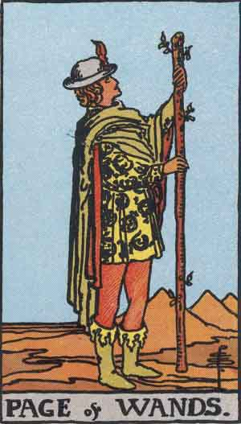

Main | Arcana | Cups | Pentacles | Swords | Wands
Page of Wands

Upright
Free Spirit, New Spark, Creative Expression
- Express yourself and your individuality with light-hearted abandon. Live inspired!
- Being quick to anger is the fastest way to put others off.
- You can learn more about who you are when you explore the unknown.
- Be positive and spontaneous but avoid impulsiveness. You may not have a plan, but you have possibility.
- Transform an immature desire into a beautiful and creative vision.
- "Be daring, be different, be impractical, be anything that will assert integrity of purpose and imaginative vision against the play-it-safers, the creatures of the commonplace, the slaves of the ordinary." - Cecil Beaton
Reversed
New Ideas, Spiritual Path
It is exciting to feel a new idea and its possibilities. Don't be discouraged by past performances. Let the idea brew if it has to. If there is something in motion and it isn't working, analyze where it is and move it forward. Stop worrying about it. Make time and do it! Explore new paths!